PORTO
Porto is more than this! Come back again! There’s still so much more to see...
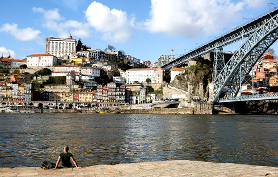
… the city that gave its name to Portugal is one of the oldest tourist destinations in Europe and a Cultural Heritage Site since 1996.
Porto - Shopping...
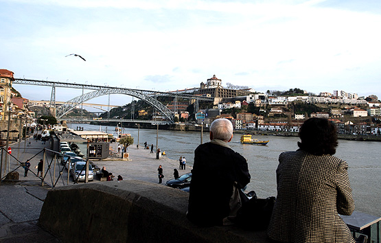
Porto is History and Tradition. Be sure to visit some of the most famous places in the city where you can buy a great range of products.
CHRISTMAS in Porto!
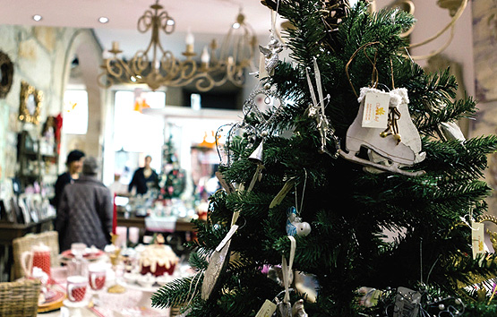
In Christmas, Porto gets a special glow.
FINLAND
Finlândia - Um Paraíso na Terra
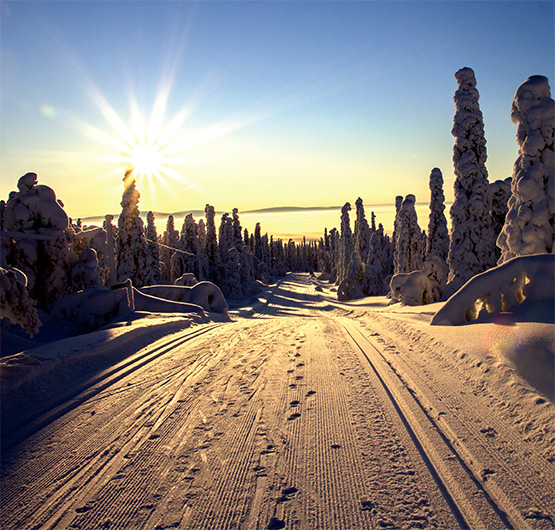
Finland is the seventh largest country in Europe, with 338,144 Km2.
Santa Park - Lapland...
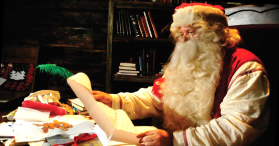
In the beautiful white world of Lapland, in a place where wishes want to become true, it opens every year the Santa Park in the depth of Santa Claus Village in Rovaniemo.
Lapland… Where Desires Come True
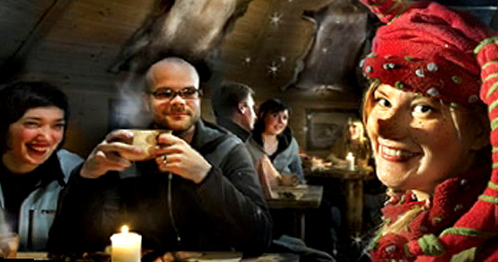
Lapland… Land of the Midnight Sun, where the sky in winter remains covered with stars for 3 months and summer does not see the night but rather the beauty of an endless sunset.
Snow Castle - Adventures in the white world
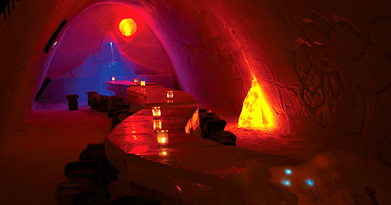
Every year, when the temperature reaches 8º Celsius negative, it stands in Kemi Finland, the majestic Snowcastle.
CASCAIS
Estoril Historic Festival F1 Classic
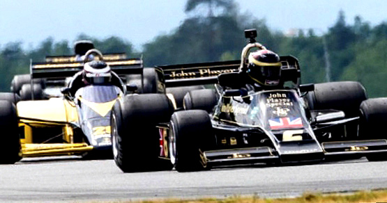
Formula 1 is coming back to the Autódromo do Estoril race track with iconic racing cars that will be scraping the Estoril asphalt in the final round of the historic FIA championship.
Herb Ritts - Exhibition
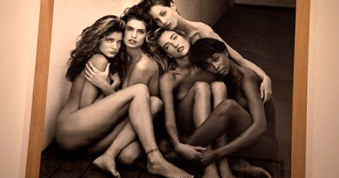
An unheard exhibition in Portugal by Herb Ritts shows photographs of Hollywood, music or fashion labels from the 1980s and 1990s.
Christmas Village - Cascais
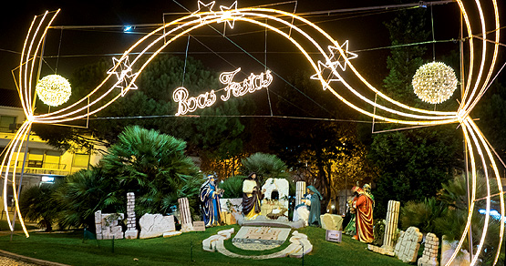
In Cascais dreams come true, and Cascais Christmas Village is the greatest example. In a magical universe, kids and adults entertain themselves in the various activities and interact with a fantastic world of elves, reindeer and fantasy.
Rock’n’Roll Maratona de Lisboa EDP
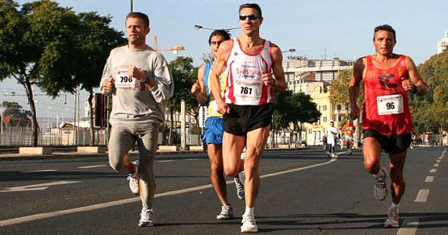
The marathon course starts in Cascais, runs along the Atlantic and through the beautiful gardens of Oeiras, then back along the banks of the Tagus river, touring the heart of old Lisbon.
ALENTEJO
Elvas - Forte da Graça
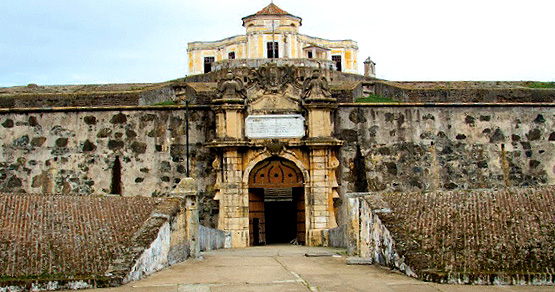
The Fort of Nossa Senhora da Graça is located north of the town of Elvas in Alentejo, and was officialy named the Fort Count of Lippe.
Elvas - Tourist Train
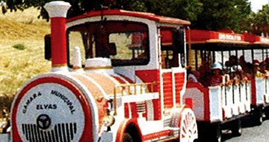
In Elvas, on several weekdays and at weekends and holidays, there is the possibility of a touristic and cultural circuit through the Tourist Train.
Elvas - Ice Arena
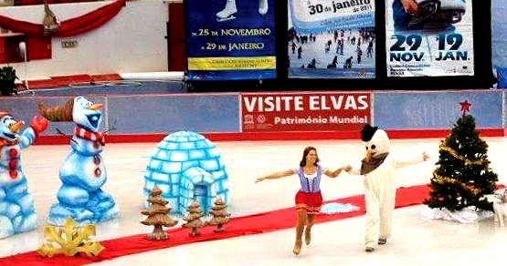
Space of leisure, attraction pole of visitors, bringing thousands of people to Elvas.
Elvas - Crhistmas lights
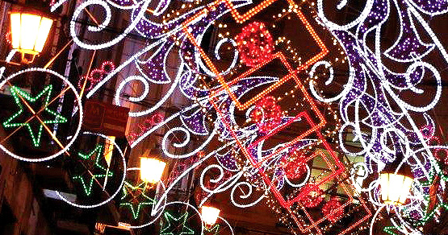
Attracting many visitors to the Historic Center, the city of Elvas returns with the Crhistmas lights to receive the christmas festivities. One more reason to visit and to know Elvas ...
USA
USA - Natural Parks
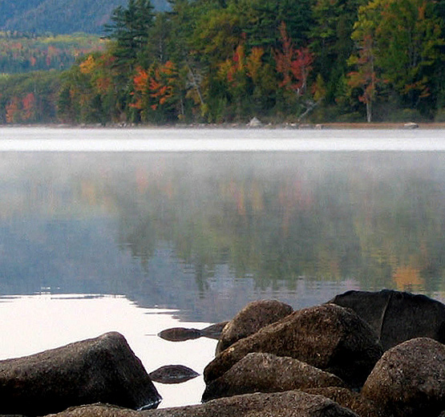
47 itineraries, representing more than 2.000 monuments, offer to all who visit them a past with life: Trails with History.
GOLEGÃ
National Horse Fair
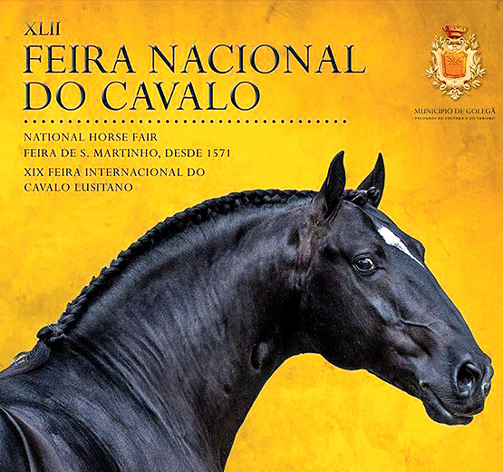
“When a farmer goes to the Fair of Golegã to guide a pair, it is not only the marialva presumption that is going there. It is the pair of beasts and the landscape making a parade to us, in a perfect conjugation of the rational, the irrational and the natural.” - “ Portugal “by Miguel Torga
SINTRA
Cabo da Roca
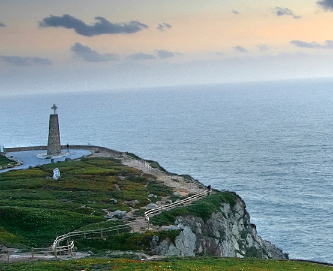
Cabo da Roca, the western most point of the European continent, situated at the very end of the Serra de Sintra, is without doubt one of the places that most symbolizes Portugal.
Feira das Mercês - The “Mercês Fair”
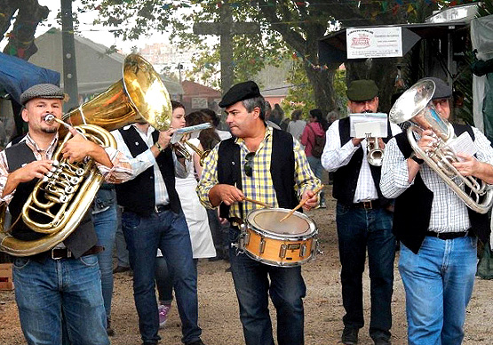
This event aims to revive one of the most emblematic fairs of the council, providing visitors with street entertainment of “saloia” (local peasant) ethnographic content, restaurants, varied handicraft stalls, a children’s area and stage performances.
LEFFEST - LISBON & SINTRA FILM FESTIVAL
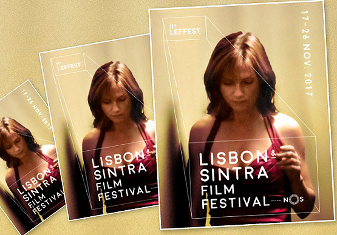
A festival where film encounters different artistic expressions such as literature, music, and visual and performing arts.
Christmas Kingdom
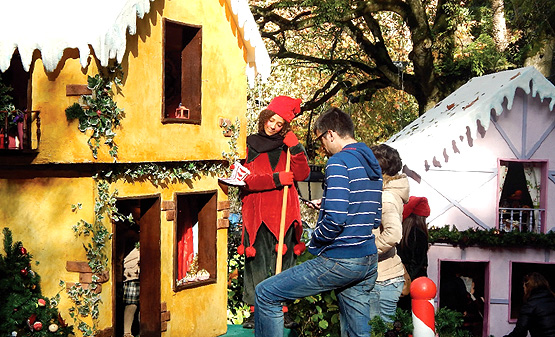
At the “Parque da Liberdade”, where visitors are surrounded by the Christmas spirit.